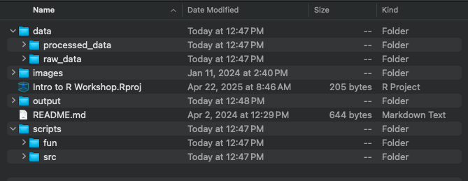
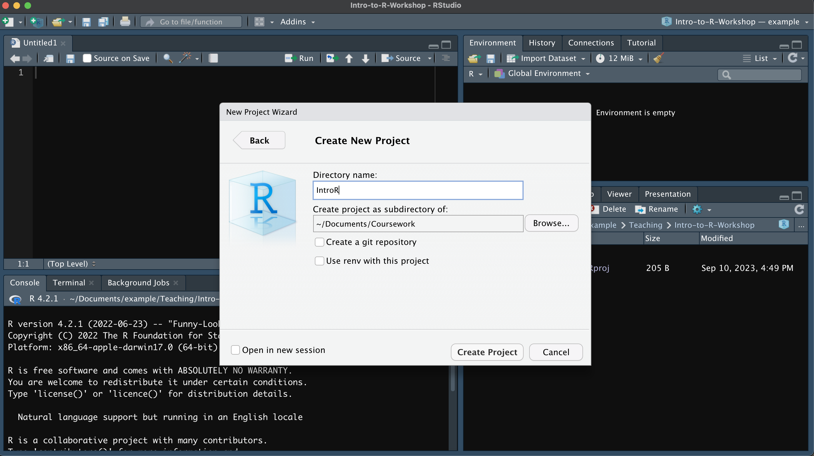

Chapter 2 Intro to R and R-Studio
2.1 What is R?
R is both the name of the programming language and the software used for data storage and manipulation.
RStudio is the Integrated Development Environment (IDE) for the R programming language that makes writing, running, and organizing R code more efficient. RStudio provides a centralized interface where you can manage your code, working directory, data, output, and environment all in one place. On my MacBook, I keep R and RStudio in the Applications folder, and on Windows, I store them on the C drive. You will need to download R before downloading RStudio.
2.2 Directory Structure
Before creating an RStudio Project, it’s important to think about how your project is structured, as this will shape your directory (i.e. folder) organization. I typically create a separate folder for each analysis, and within each, I include subfolders for data, output, and scripts. Other folders might include figures, results, and documents. You may want to consider housing two projects in the same directory if they utilize the same data. All files need to be readable by the computer and should not contain white spaces, punctuation, or special characters. I generally follow the same naming conventions for my files (e.g., camelCase, snake_case, kebab-case, PascalCase).

After setting up your directory structure, the next step is to create an RStudio Project in R Studio.
EXERCISE 1: CREATING A WORKING DIRECTORY
- Create a new working directory named
IntroR. You can put this folder in whichever location makes sense for you on your computer. - Create subfolders named
data,output, andscripts
2.3 R Studio
First let’s go over the basics of RStudio. When you first open RStudio, you will be greeted by three panels:

- The Interactive R Console (entire left)
- The top-left panel in RStudio is the code editor, where you write and save your code. When you run a line of code from the code editor (i.e. script), the output appears in the Console (bottom-left panel). While you can type and run code directly in the Console, it won’t be saved when you close R unless you explicitly save your R history. That’s why it’s best to write your code in the code editor—so you have a permanent, editable copy—and send lines to the Console to execute as needed.
- Environment/History (tabbed in upper right)
- Environment: collection of objects (i.e. variables, data frames, functions, etc.) that we define during our R session
- History: a record of every line of code executed during the session
- Files/Plots/Packages/Help/Viewer (tabbed in lower right)
- Files shows all the files in your working directory. A working directory is essentially the default folder that R is reading data from/putting output into. We will go through setting the working directory below. You can also create, delete, and rename files and folders from this tab.
- Plots displays figures that you generate
- Packages displays any packages you have downloaded and installed in R. If there is a check mark next to a package, it means you’ve loaded it into your current R session
- Help will show you a description of functions. To get a function description, simply run
?followed by the function name. For example,?setwd()will show me the documentation for thesetwd()function. - Viewer displays interactive or web-based content
- Presentation displays slide-style documents created using R Markdown
2.4 RStudio Projects
Now that we understand the basics of RStudio, let’s create an RStudio Project that will live in the directory folder of the project. RStudio Projects are a self-contained, portable work space where you can have your data, code, and output all in one place. RStudio Projects are also great to use for reproducibility because they are self-contained and easy to share with collaborators. This means you can compress the entire RStudio Project into a ZIP file and share it with a collaborator, who should then be able to run your code and reproduce the same results. Let’s go through how to set up an RStudio Project.
Steps for Making an RProject

- Open the
Filemenu from the upper left. - Select
Existing Directorysince we have already set up our project’s directory - Navigate to the directory folder
- Select
Create Project
Each time you open this RStudio project, the working directory is automatically set to the IntroR folder, where the project is saved. This means you don’t need to manually set the working directory, as RStudio Projects handle it for you, helping keep your files and code organized and consistent.
For example, if my RStudio Project is located in C:/Teaching/IntroR/, my working directory is also located C:/Teaching/IntroR/.
EXERCISE 2: CREATE AN RSTUDIO PROJECT
- Create an RStudio PRoject in your
IntroRfolder. - Set a new editor theme. To change the editor theme, go to Tools > Global Options, click on the Appearance tab, and choose a new editor theme from the list. Each theme will be previewed in the right window.